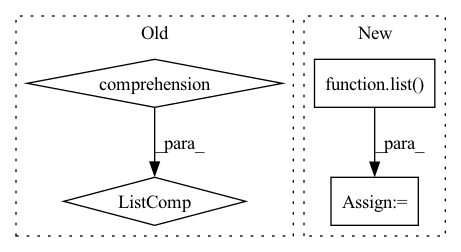

Pattern ID :1528

Before Change
// [n, c, h, w]
quantizeds.append(deTransformed)
samples = [s.argmax(-1).permute(1, 0).reshape(n, h, w) for s in samples]
logits = [l.permute(1, 0, 2).reshape(n, h, w, k) for l in logits]
// codes.append(samples.argmax(-1).permute(1, 0).reshape(n, h, w))
// logits.append(logit.permute(1, 0, 2).reshape(n, h, w, k))
return quantizeds, codes, logits
After Change
def forward(self, latents, temp, *_):
quantizeds = list()
codes = list()
logits = list()
for i, (xRaw, k) in enumerate(zip(latents, self._k)):
n, c, h, w = xRaw.shape
// [k, 1, c]
codebook = getattr(self, "codebook")[:, None, :]
In pattern: SUPERPATTERN
Frequency: 3
Non-data size: 4
Instances
Fragment ID: 5118079
Project Name: xiaosu-zhu/mcquic
Commit Name: a4a40624c11a9779699f4a37cccb5b5ed8bc5048
Time: 2021-04-10
Author: xiaosu.zhu@outlook.com
File Name: src/mcqc/models/quantizer.py
M Class Name: TransformerQuantizer
N Class Name: TransformerQuantizer
M Method Name: forward(3)
N Method Name: forward(3)
M Parent Class: nn.Module
N Parent Class: nn.Module
M File Name: src/mcqc/models/quantizer.py
N File Name: src/mcqc/models/quantizer.py
M Start Line: 271
M End Line: 298
N Start Line: 504
N End Line: 534
'>
Before Change
def forward(self, x):
if self.training:
total_blocks = sum([len(sx) for sx in x])
mask_size = torch.Size([total_blocks])
binomial = torch.distributions.binomial.Binomial(probs=1 - self.p)
mask = binomial.sample(mask_size) * (1.0 / (1 - self.p))
After Change
mask_size = torch.Size([X[0].shape[0], sum(blocks_per_mod)])
binomial = torch.distributions.binomial.Binomial(probs=1 - self.p)
mask = binomial.sample(mask_size) * (1.0 / (1 - self.p))
mask_shapes = [list(x.shape[:2]) + [1] * (x.dim() - 2) for x in X]
grouped_masks = torch.split(mask, blocks_per_mod, dim=1)
grouped_masks = [m.reshape(s) for m, s in zip(grouped_masks, mask_shapes)]
X = [x * m for x, m in zip(X, grouped_masks)]
return X, grouped_masks
return X, None
'>
Fragment ID: 5118085
Project Name: anita-hu/msaf
Commit Name: a2c91bd6e186680ca2c41bbf22c9b57aff4654d2
Time: 2020-12-30
Author: anitahu113@gmail.com
File Name: MSAF.py
M Class Name: BlockDropout
N Class Name: BlockDropout
M Method Name: forward(2)
N Method Name: forward(2)
M Parent Class: nn.Module
N Parent Class: nn.Module
M File Name: MSAF.py
N File Name: MSAF.py
M Start Line: 40
M End Line: 49
N Start Line: 39
N End Line: 47
'>
Before Change
if self.training and self.layer_dropout > 0:
to_drop = torch.empty(len(self.blocks)).uniform_(0, 1) < self.layer_dropout
blocks = [block for block, drop in zip(self.blocks, to_drop) if not drop]
blocks = self.blocks[:1] if len(blocks) == 0 else blocks
block_args = list(map(lambda x: {"f_args": x[0], "g_args": x[1]}, block_args))
return _ReversibleFunction.apply(x, blocks, block_args)
After Change
args = route_args(self.args_route, kwargs, len(blocks))
args = list(map(lambda x: {"f_args": x[0], "g_args": x[1]}, args))
layers_and_args = list(zip(blocks, args))
if self.training and self.layer_dropout > 0:
layers_and_args = layer_drop(layers_and_args, self.layer_dropout)
blocks, args = map(lambda ind: list(map(itemgetter(ind), layers_and_args)), (0, 1))
'>
Fragment ID: 5118081
Project Name: lucidrains/sinkhorn-transformer
Commit Name: d5b9c649e59290b15c15f85d0bb182cb20b699fb
Time: 2020-04-15
Author: lucidrains@gmail.com
File Name: sinkhorn_transformer/reversible.py
M Class Name: ReversibleSequence
N Class Name: ReversibleSequence
M Method Name: forward(2)
N Method Name: forward(2)
M Parent Class: nn.Module
N Parent Class: nn.Module
M File Name: sinkhorn_transformer/reversible.py
N File Name: sinkhorn_transformer/reversible.py
M Start Line: 133
M End Line: 142
N Start Line: 161
N End Line: 174